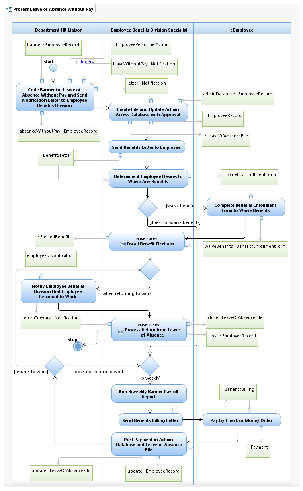

Use Case Model: Process Leave of Absence Without Pay
Architect: Aaron Brown, IT Enterprise Architect Senior
Date Last Modified: 03/08/2013
User Review: Shannon Flett, Linda Escamilla, Shelly Sheppard
Date: 03/08/2013
Benefits Specialist is notified by the Department Administrator that an employee is out on leave and doesn’t have personal sick, vacation or compensation time in order to have a payroll check produced. Benefits Specialist runs report to see how much employee owes for premiums. Benefits Specialist contacts employee with amount he/she owes for premiums due. Alternately, the employee may elect to waive benefits. When employee returns to work, Benefits Specialist performs Process Return from Leave of Absence.
Follow link to Role Definitions
Use Case Model: Process Leave of Absence Without Pay
Follow link to Process Return from Leave of Absence and Enroll Benefit Elections

Activity Model: Process Leave of Absence Without Pay